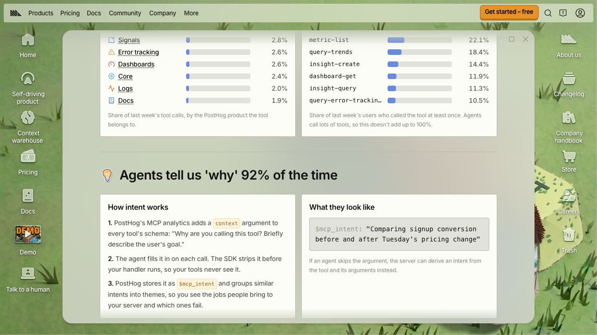

Ship the MCP. Listen to What It Asks For.
Assuming you already have a usable API, an MCP server can teach you what to build next. You have to instrument it to learn anything.
A copilot demo is a lovely thing. You know which question to ask, the data is conveniently available, and nobody interrupts to request something your product has never done. It's possible to leave the demo with enormous confidence in a conversation you effectively had with yourself.
Customers tend to be less cooperative.
If you already have a usable API, I'd start by exposing a useful set of tools through MCP and watching what people try to do with them. It's a way to get real tasks into the system before spending months deciding what your own chat interface should look like. There is still work involved in permissions, tool design, and reliability. You just get to start learning before you've also built a conversation sidebar.
At Synthflow, most of our MCP usage was for analysing calls. That's a useful product discovery result. “Customers want AI” can support almost any roadmap. “Customers are using this to analyse calls” gives you somewhere to begin.
But you won't learn that from a graph showing that your tools were called 12,000 times. That's an illustrative number, and it looks equally impressive whether people completed useful work or spent the afternoon retrying something broken.
Imagine two sessions that both fetch a call transcript. In one, the customer is investigating why a call failed. In the other, they're collecting examples for a weekly report. The API activity may look similar. The next useful tool is quite different: one needs diagnostic evidence, the other may need filtering and aggregation. If you only count transcript requests, you can confidently build more transcript requests.
This is why I'd add instrumentation before launch, including a way for the agent to describe what it's trying to accomplish. PostHog's MCP analytics captures tool usage, while its intent capture adds a context argument that asks the agent why it is calling a tool. You get something to investigate alongside the event count.

That explanation is still the agent's account of what it's doing. It isn't a recording of every external conversation, or proof that the customer got what they wanted. Treat it as a useful lead. Read it alongside the tool sequence, results, and failures.
A repeated error might mean the implementation is broken. It might mean the tool description invites an argument the tool doesn't accept. Or the customer might be trying to do something you simply don't support. Those lead to three different pieces of work, despite producing the same red line on a dashboard.
The missing tools are especially interesting. A customer who needs to compare a hundred calls may discover you only support fetching them individually. Your existing tools can all work correctly while the overall experience is miserable. Capture unsupported requests where you can, and follow up when the evidence is unclear. Successful tool calls tell you very little about tasks that never became tool calls.
I'd use these observations to choose the next small set of improvements: a clearer description, a missing capability, or a better route through an existing task. Then watch what changes.
Before rehearsing another copilot demo, read a few sessions where nobody knew what the customer was going to ask.